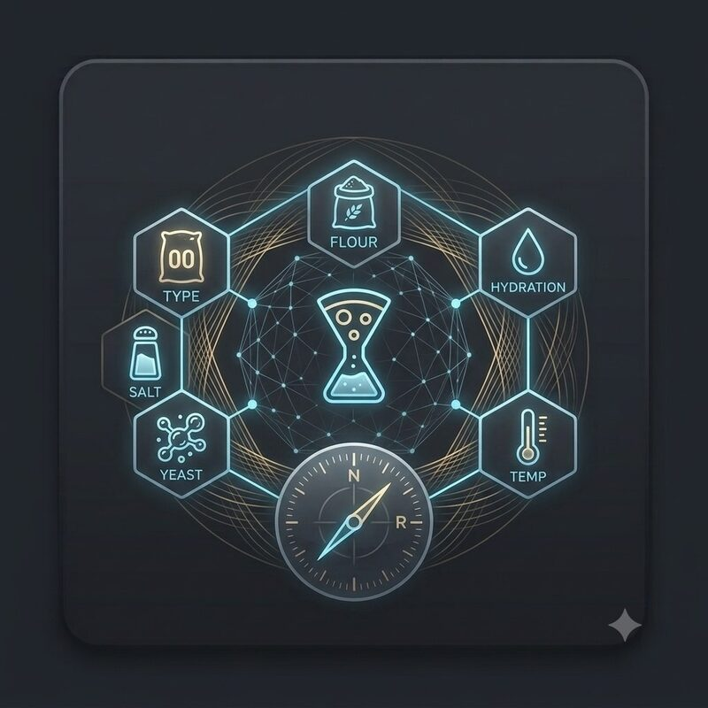
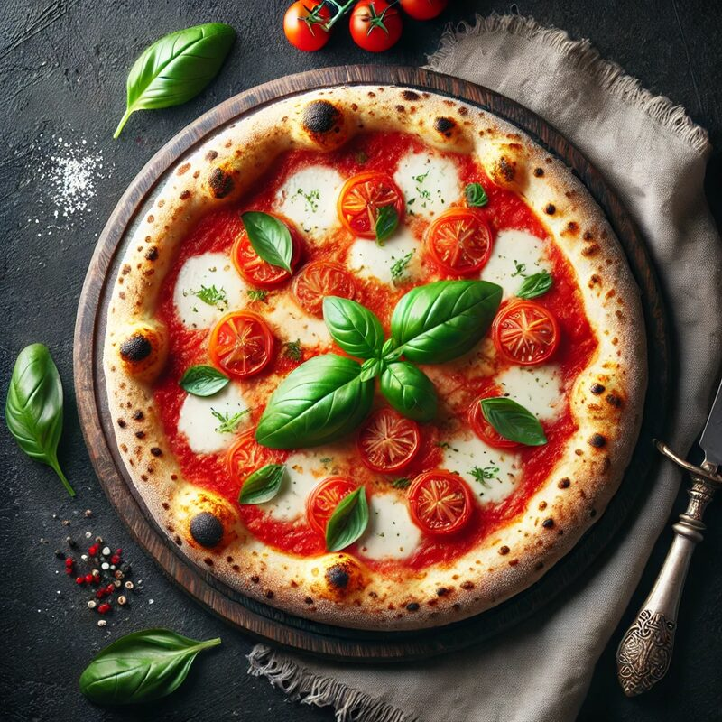
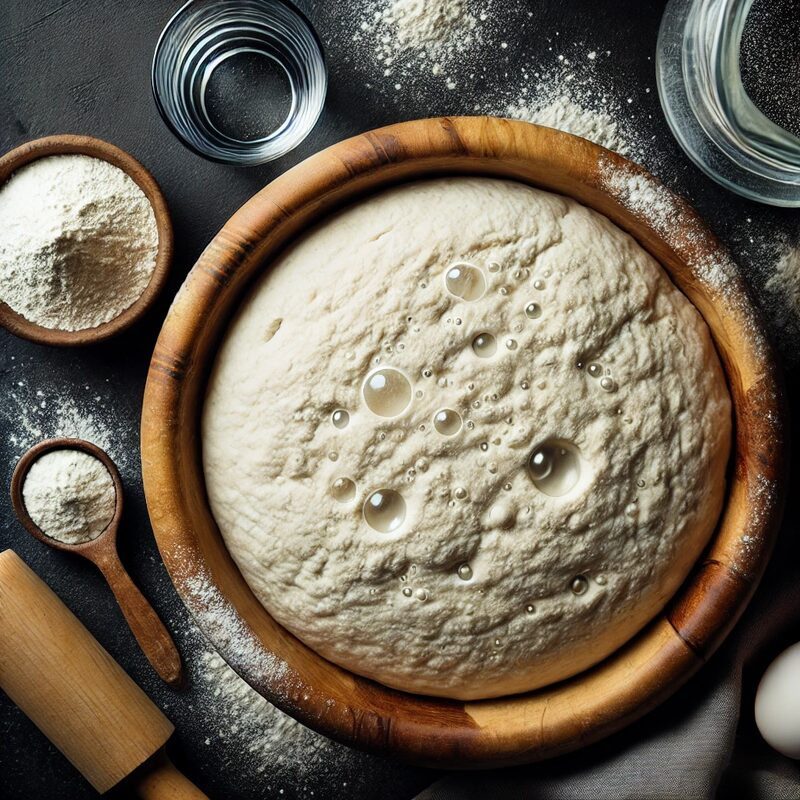
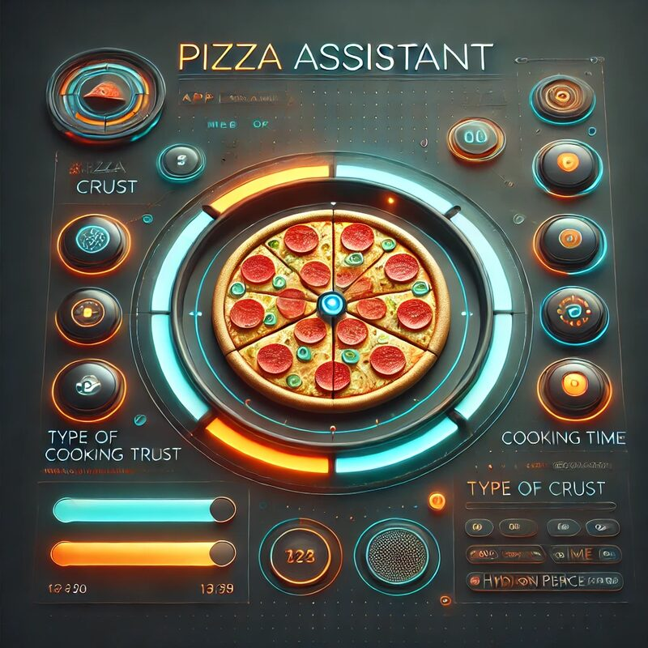
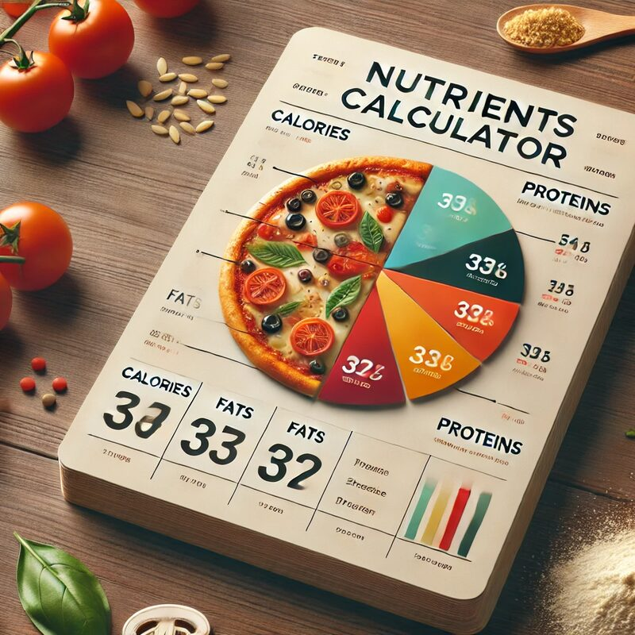
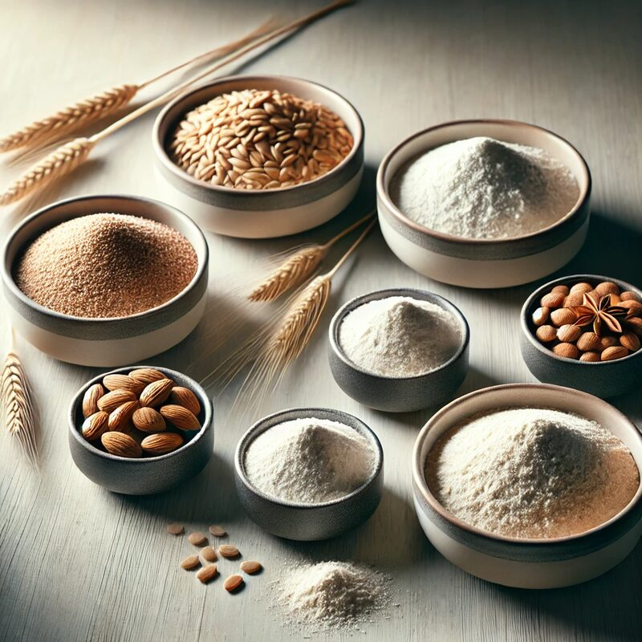
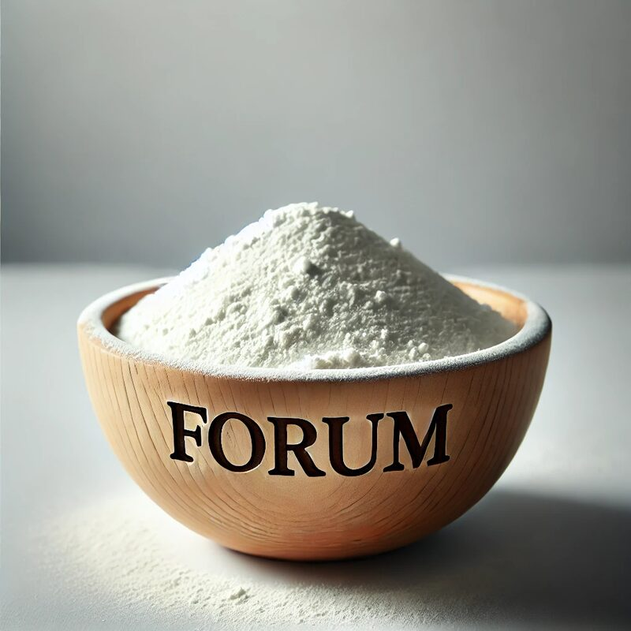
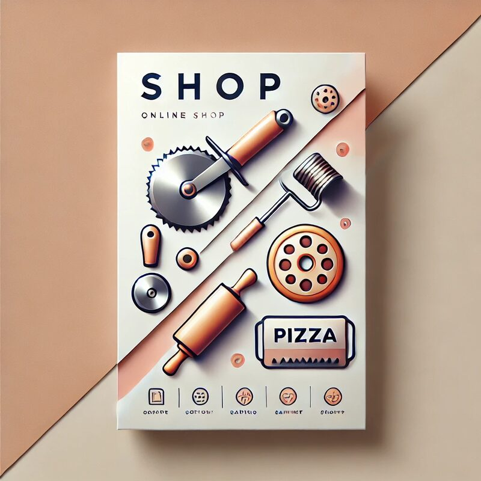

Il laboratorio digitale della pizza
La scienza esatta
di un impasto perfetto.
Farina, idratazione, lievito, temperatura: ogni numero calcolato, ogni fase spiegata. Non ricette a caso — un metodo.
Prova subito
Quanto impasto ti serve?
Un assaggio del calcolatore vero: cambia i numeri e guarda la ricetta aggiornarsi all'istante (metodo diretto, 24h a temperatura ambiente).

01 — Il motore
Calcolatore Impasto
Dosi di farina, idratazione, lievito e temperatura calcolate scientificamente per ogni stile di pizza, teglia compresa.
Apri Calcolatore
02 — Gli stili
Tipi di Pizza
Napoletana, Romana, Contemporanea, Pala, Padellino: caratteristiche, idratazioni e metodi di ciascuna.
Scopri di più
03 — Le basi
Prefermenti e Farine
Biga, Poolish, Lievito Madre e la forza delle farine (W): la teoria dietro ogni impasto ad alta idratazione.
Approfondisci
04 — La guida
Assistente Virtuale
Fatti guidare passo-passo durante staglio, appretto, stesura e cottura, con i tempi calcolati per te.
Avvia Guida
05 — I numeri
Nutrienti e Calorie
Apporto calorico e macronutrienti per panetto e per singola porzione, calcolati sulla tua ricetta.
Calcola Nutrienti
06 — La ricerca
Scienza della Pizza
Approfondimenti aggiornati periodicamente da fonti verificate: fermentazione, farine, nutrizione, sempre con la fonte citata.
Esplora gli Approfondimenti
07 — La community
Community PizzaLab
Condividi foto, ricette, consigli e trucchi da pizzaiolo con altri appassionati.
Unisciti Ora
08 — Gli strumenti
Shop & Strumenti
Pale, pietre refrattarie, contenitori per lievitazione e termometri: l'attrezzatura consigliata.
Vai allo Shop